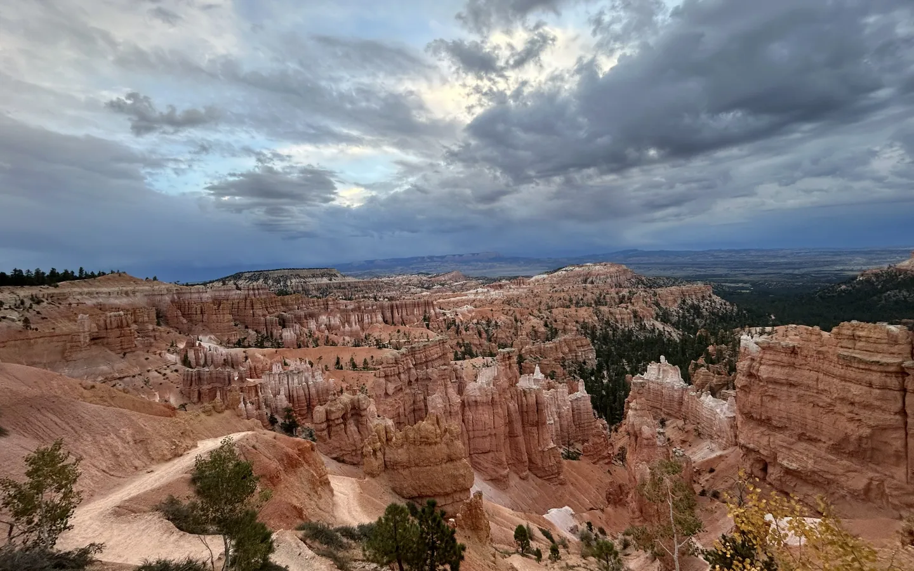
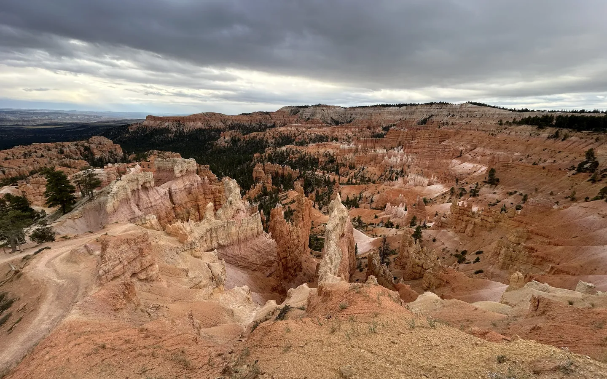

SOURCE-REVIEWED · Bryce Canyon National Park
Sunset Point to Sunrise Point
A big Bryce view without a big climb: follow the paved rim between Sunset and Sunrise Points and watch a whole amphitheater of hoodoos unfold below. Pause often, look for changing colors, and enjoy the kind of scenery that makes a first hike feel like an occasion. This guide covers only the short paved segment, not the full Rim Trail or a descent into the canyon.

Sunset Point — one end of the paved Bryce Canyon rim walk.
Photo: Take a Hike Utah site owner · Photo credits
Sunrise Point — the other end of the paved rim walk. These are Bryce Canyon viewpoints, distinct from Sunset Point at Capitol Reef.
Photo: Take a Hike Utah site owner · Photo credits- Location
- Bryce Canyon National Park
- Experience
- First Steps
- Landscape
- Desert & red rock
- Planning seasons
- Spring, Summer, Fall
- Distance
- 1 miles
- Elevation gain
- 40 feet
- Approximate duration
- About 1 hour (NPS; activity listing gives 20–60 minutes)
- Route type
- Out and back; 0.5 mile each way
- Trail surface
- Paved concrete
- Terrain
- Maintained path
- Estimated difficulty
- Easy (NPS); high elevation and winter ice change the demands
- Trailhead
- Sunset Point or Sunrise Point parking area, Bryce Canyon National Park
Why this hike is worthwhile
A big Bryce view without a big climb: follow the paved rim between Sunset and Sunrise Points and watch a whole amphitheater of hoodoos unfold below. Pause often, look for changing colors, and enjoy the kind of scenery that makes a first hike feel like an occasion. This guide covers only the short paved segment, not the full Rim Trail or a descent into the canyon.
Know Before You Go
Preparation
Bring water, sun protection, layers, and shoes with grip. Remain on the paved rim segment for this outing; the full Rim Trail and routes descending below the rim have different demands.
Seasonal hazards
Rim viewpoints have steep drop-offs. Stay behind barriers and keep young hikers close. Snow and ice can make paved surfaces hazardous; NPS recommends winter traction devices. Do not treat an easy summer rating as a winter safety assessment.
Seasons and weather
Editorial beginner planning seasons: spring, summer, and fall when the paved segment is free of snow and ice. The park also describes winter visits, but winter is excluded from the beginner filter because traction and different preparation may be needed. Spring and fall can still have snow.
Bryce is a high-elevation park. Pack for cold and rapidly changing weather. Lightning is a year-round risk, especially in summer storms: if you hear thunder, seek shelter in a building or vehicle rather than remaining on the rim.
Fees
A park entrance fee or qualifying pass is required; the official fee page lists a standard private-vehicle pass at $35. Check the linked schedule for your party, residency, pass eligibility, and current rules before travel.
Access and restrictions
Parking is available at either endpoint, but availability is not guaranteed. Oversized vehicles are not permitted in these parking areas while the park shuttle operates. Leashed pets must stay on paved surfaces. Check shuttle schedules, closures, and current conditions.
Official information and verification
- NPS: Sunset Point to Sunrise Point route, time, gain, surface, and restrictions
- NPS: easy hikes and lightning advice
- NPS: winter planning and traction
- NPS: Bryce Canyon fees and passes
Last source review: 2026-10-21
NPS lists 1.0 mile round trip, 40 feet of elevation gain, and concrete surface. Its accessibility paragraph contains an inconsistent metric distance; this guide uses the route description’s 1.0 mile / 1.6 km total. Planning-season selections are editorial and conditional, not current access reports.
Build your trail confidence ↗